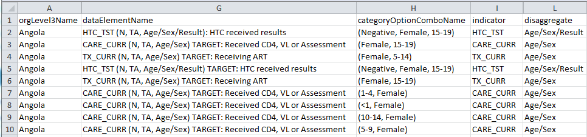

Since early 2015, the U.S. President's Emergency Plan for AIDS Relief (PEPFAR) has been setting targets and entering results into the DATIM database. With a wealth of HIV/AIDS programmatic results quarterly and down to the site level, DATIM is an extremely useful resource to support data-driven decision making and to help build the capacity necessary towards achieving epidemic control. DATIM has features, such as its built in pivot tables, mapping, and visualization that helps get a snapshot of the data. This view, however, is just a peak into the data and can be rather limiting.
PEPFAR agencies, Technical Working Groups, and the Interagency Collaborative for Program Improvement (ICPI) workstreams need to get more than a just glimpse at this data; they need to use this information to design programs, monitor progress and evaluate outcomes. As a result, we are seeing an influx in “tools” and “dashboards” to make sense of complex and ample data across numerous operating units and indicators. This is a great step towards data-driven decision making. One drawback is the lack of coordination and, as a result, a lack of uniformity in the creation of these tools.
An optimal strategy would be to coordinate efforts, designing visual tools and dashboards in a similar fashion. Adopting a uniform structure and overall style has a number of benefits including a similar SQL pull for each product to get large scale data out of DATIM, improved collaboration across ICPI analysts, and establishing an overarching ICPI "brand".
Given the widespread use of Excel given accessibility and skill-sets, this document outlines style and structure guidance for developing dashboards and tools in Excel.
Starting with pen and paper to develop the purpose, identify needs, and sketch a vision
Learn MoreA good tool/dashboard starts with a consistent, clean structure of the raw data
Learn MoreUnderstanding key features and formulas to make use of when developing a tool in Excel
Learn MoreCreating an effective tool builds off fundamentals of data visualization
Learn More
The first step even before touching any data is to have a plan of attack. The best way to accomplish this is to start with pen and paper. Begin by jotting down the purpose of the visualization/tool and the message you hope to get across to the audience. Think about the ways in which you can visualize this and how different tables and figures can reinforce this or multiple points. If you are making a dynamic tool, consider how you want the user to interact with the interface and adjust the views and/or data.
With your concept in mind, you can begin to think about the design of your tool by sketching out some rough ideas of the structure. You do not need to be an artist to do this; its more the process of thinking about how the pieces will be placed, mapping the overall layout, and considering how different portions may interact or respond to one another.
Armed with a plan, the next best place to start developing a tool is with the data itself. Whether you pull the data out of the DATIM Data Genie or request the data through a SQL pull from someone in the Data Management Group, the data should be structured in a similar manner where you have your observations by row and indicators as your columns (as in Figure 1).
Figure 1: Raw data structure

Data structure becomes extremely important when working with a tool or visualization that is dynamic or gets updated periodically. Even trying to start the process with fictitious data can be difficult without knowing how the data will be structured; you will likely spend a lot of time rebuilding the formulas within your tool to work with the actual data structure.
When developing a dashboard, there are a number of key indicators you will likely make use of when working with PEPFAR MER data.
The table that you have setup in Excel will form the basis for the rest of your file. You can call this tab “Raw Data.” In addition to the raw data tab, there are a few other useful tabs to include.
The first additional tab to include is the “Info” tab. This tab will include key information about the data being displayed, including any caveats or notes your audience should know about the data. Equally important, you should always include the date and location of your data pull so your audience will know how recent the data is and more easily identify if there are known issues with the dataset. This tab is also a good place to place the ICPI logo if it is not displayed elsewhere and to provide any relevant contact information for the tool developers.
Another good tab to include in the file is a reference tab, which can be called “rs” for Rosetta Stone. The purpose of this tab is to provide (a) a crosswalk between items, e.g. regions and countries, (b) the location of all lists to be used in dropdowns, or (c) any other relevant reference material called upon by the tool or necessary for the developer.
The last necessary tab or tabs to include provide your views of the data. The next section discusses how to use formulas and other key features to aggregate the data and tell a story via visuals or tables.
The bulk of the work comes when you have to start creating the tables and visuals for your tool. Working with Excel, there are often multiple ways to go about the process of “calling” or looking up data into a table to get the information you want to display. PivotTables are often one route and can be easy to setup, but can suffer from their bulky structure, their need to be refreshed, and random bugs. Although it can take a bit time more to setup and validate, another method would be to look up the data through formulas. These formulas can be a bit complex, but benefit from their ability to be dynamic and malleable. Setting up your raw data as table will make will decrease some of the complexity and improve readability of your formulas. Below are some key features and functions from Excel which will be the building blocks of your tool.
Part of creating an effective dashboard or tool in part comes from your use of formulas, but it also hinges on a number of other design elements. When building your tool, you should keep the following items in mind.